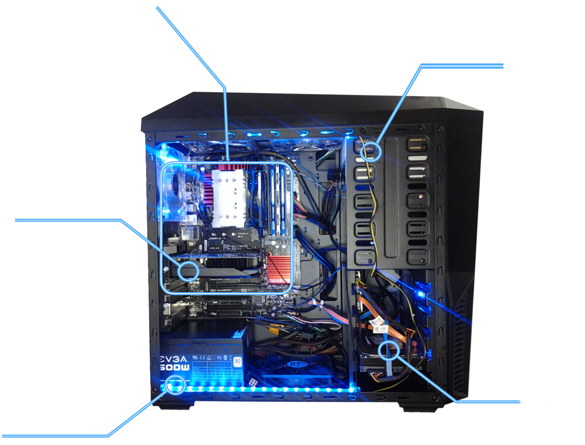

Plyta glowna
W komputerze na płycie głównej znajdują się: procesory, pamięć operacyjna lub gniazda do zainstalowania tych urządzeń oraz gniazda do zainstalowania dodatkowych płyt zwanych kartami rozszerzającymi (np. PCI), oraz gniazda do urządzeń składujących (dyski twarde, napędy optyczne itp.)
Karta graficzna
Pierwsze karty graficzne potrafiły jedynie wyświetlać znaki alfabetu łacińskiego ze zdefiniowanego w pamięci karty generatora znaków.W nowych układach graficznych zrezygnowano ze sztywnego schematu obliczeń, dając użytkownikowi pewną ilość jednakowych "rdzeni", które może on sobie zaprogramować (przy pomocy shaderów) do wyświetlania dowolnych efektów graficznych. Umożliwia to też wykorzystanie karty graficznej jako procesora ogólnego przeznaczenia (GPGPU), zdolnego do przeliczania dużych zbiorów uporządkowanych danych i renderowania skomplikowanych przestrzeni.
Zasilacz
urządzenie służące do dopasowania dostępnego napięcia do wymagań zasilanego urządzenia.
CD-ROM
Napędy do odczytu płyt CD-ROM są połączone z komputerem przez IDE(ATA), SCSI, SATA, FireWire lub USB. Praktycznie wszystkie współczesne napędy CD-ROM są w stanie odczytywać płyty muzyczne (jak również Video CD i inne standardy danych), czasami jednak wymagane jest do tego odpowiednie oprogramowanie.
Dysk
pamięć masowa wykorzystująca nośnik magnetyczny do przechowywania danych. Nazwa „dysk twardy” wynika z zastosowania twardego materiału jako podłoża dla właściwego nośnika, w odróżnieniu od dysku miękkiego, w którym nośnik magnetyczny nanoszono na podłoże elastyczne.Pojemność dysków twardych wynosi od 5 MB (dawniej) do 10 TB (w laptopach 20–2000 GB)
Wykonanie:Natalia Piwowar klIV Ti